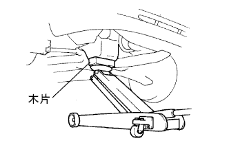
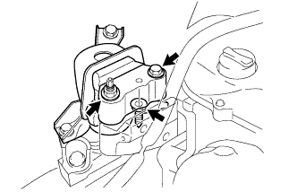
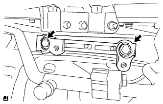
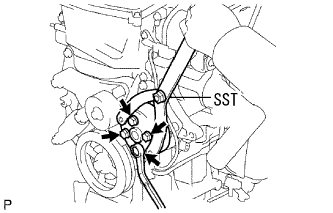
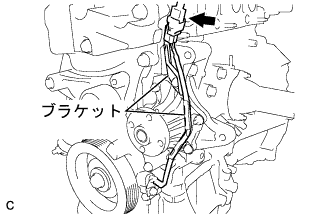
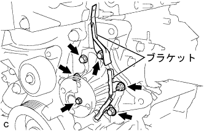
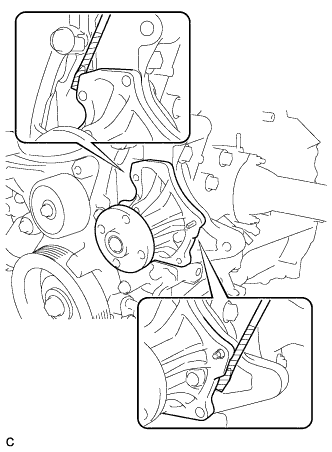

Water Pump Assembly (2AZ-FE) Removal |
| 1. Disconnect Battery Negative Terminal |
| 2. Remove Front Tire RH |
| 3. Remove Engine Under Cover NO.1 |
Remove the 6 bolts and 7 clips, and remove the engine under cover No.1.
| 4. Remove Engine Under Cover Rear RH |
Remove the 5 clips and remove the RH rear engine cover.
| 5. Remove Radiator Upper Air Deflector |
Remove the 8 clips and the radiator upper air deflector.
| 6. Drain Coolant (Toyota Genuine Super Long Life Coolant) |
Loosen the radiator drain cock plug.
Remove the radiator cap and drain the coolant.
Loosen the cylinder block drain cock plug and drain the coolant from the engine.

| 7. Remove Fan & Alternator V Belt |
 |
Using SST, slowly turn the V-belt tensioner clockwise.
Remove the V-belt from each pulley and slowly return the tensioner.
| 8. Remove Alternator Assembly |
 |
Disconnect the connector.
Remove the terminal cap.
Remove the nut and disconnect the harness from the +B terminal.
Remove the bolt and disconnect the clamp bracket.
Disconnect the harness clamp.
 |
Remove the 2 bolts and the Alternator assembly.
| 9. Disconnect Radiator Reserve Tank Assembly |
 |
Remove the 2 bolts and disconnect the radiator reserve tank.
| 10. Remove Engine Mounting Insulator Sub-assembly RH |
 |
Support the oil pan with a jack, using a piece of wood, etc.
 |
Remove the 2 bolts and the nut, and remove the 2 cooler pipe brackets.
 |
Remove the bolt and 2 nuts, and disconnect the engine mounting insulator RH from the engine mounting bracket RH.
 |
Remove the 3 bolts and remove the RH engine mounting insulator.
| 11. Engine Mounting Spacer Removal |
 |
Remove the 2 bolts and remove the engine mounting spacer.
| 12. Remove Water Pump Pulley |
 |
Using SST, remove the 4 bolts and remove the water pump pulley.
| 13. Remove Water Pump Assembly |
 |
Disconnect the crankshaft position sensor connector.
Disconnect the wire harness from the bracket.
 |
Remove the 4 bolts, 2 nuts and 2 wire harness clamp brackets.
 |
Using a screwdriver with its tip wrapped in protective tape, pry at the location shown in the illustration to remove the water pump assembly.